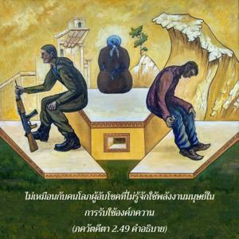

โอ้ ธนญฺชย เธอจงละทิ้งการกระทำอันน่ารังเกียจนี้ไปให้ไกลแสนไกลด้วยการอุทิศตนเสียสละรับใช้ และด้วยจิตสำนึกเช่นนี้จงศิโรราบต่อองค์ภควาน ผู้ใดที่ปรารถนาจะหาความสุขจากผลงานของตนเองนั้นเป็นคนโลภ

ผู้ที่เข้าใจสถานภาพพื้นฐานของตนเองอย่างแท้จริงว่าเป็นผู้รับใช้นิรันดรขององค์ภควานฺจะยกเลิกกิจกรรมอื่นๆทั้งหมดนอกจากการทำงานในกฺฤษฺณจิตสำนึก ดังที่อธิบายไว้แล้วว่า พุทฺธิ-โยค หมายถึงการรับใช้ทิพย์แด่องค์ภควานฺด้วยความรัก การอุทิศตนเสียสละรับใช้เช่นนี้เป็นวิธีการทำงานที่ถูกต้องของสิ่งมีชีวิต คนโลภเท่านั้นที่ปรารถนาจะหาความสุขกับผลงานของตนเองซึ่งทำให้ถูกพันธนาการทางวัตถุมากยิ่งขึ้น นอกเหนือจากการทำงานในกฺฤษฺณจิตสำนึกแล้วกิจกรรมอื่นทั้งหลายเป็นที่น่ารังเกียจ เพราะว่าจะผูกมัดผู้กระทำให้เวียนว่ายอยู่ในวัฏจักรแห่งการเกิดและการตายตลอดไป ฉะนั้นเราไม่ควรปรารถนาที่จะเป็นต้นเหตุของงาน ทุกสิ่งทุกอย่างควรทำไปในกฺฤษฺณจิตสำนึกเพื่อให้องค์กฺฤษฺณทรงพอพระทัย คนโลภไม่รู้ว่าเขาควรใช้ทรัพย์สินความร่ำรวยที่ตนได้มาอันเนื่องมาจากความโชคดี หรือจากการทำงานหนักอย่างไร เราควรใช้พลังงานทั้งหมดทำงานในกฺฤษฺณจิตสำนึกซึ่งจะทำให้ชีวิตเราประสบความสำเร็จ ไม่เหมือนกับคนโลภผู้อับโชคที่ไม่รู้จักใช้พลังงานมนุษย์ในการรับใช้องค์ภควานฺ